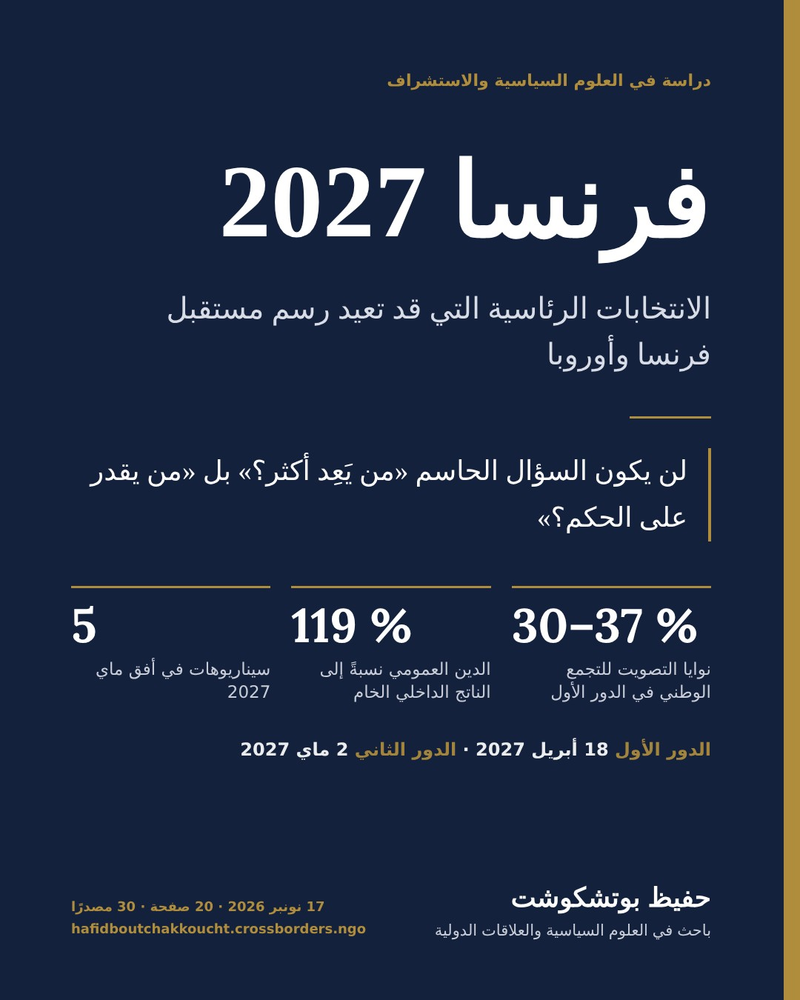

→ المنشورات · دراسة في العلوم السياسية والاستشراف · العلوم السياسية
فرنسا 2027
الانتخابات الرئاسية التي قد تعيد رسم مستقبل فرنسا وأوروبا
تحميل PDF · 20 صفحةالقراءة على الموقعالاستشهاد بهذه الدراسة
- المؤلف
- Hafid Boutchakkoucht
- تاريخ النشر
- 17 نونبر 2026
- النوع
- دراسة في العلوم السياسية والاستشراف
- اللغة
- النص الكامل بالفرنسية
- المقاربة
- العلوم السياسية المقارنة، وسوسيولوجيا الانتخابات، والاستشراف الاستراتيجي

ملصق الدراسة

الدراسة بالأرقام
- 30–37 %
- نوايا التصويت للتجمع الوطني في الدور الأول، مطلع نونبر 2026
- 119 %
- الدين العمومي نسبةً إلى الناتج الداخلي الخام، نهاية يونيو 2026
- 5
- سيناريوهات في أفق ماي 2027
- 30
- مصدرًا مرقّمًا
أرقام مأخوذة من الدراسة.
تعليق
لا تسعى هذه الدراسة إلى تسمية الفائز، بل تنقل السؤال من التنافس بين الوعود إلى القدرة على الحكم. وتضع استطلاعات الرأي والإحصاءات الرسمية والمواقف المعلنة للمرشحين في مواجهة النظريات الكبرى حول الأنظمة الحزبية، من دوفرجيه إلى بيتر ماير.
أهم الخلاصات
- يتصدر التجمع الوطني الدور الأول بما بين 30 و37 % من نوايا التصويت، لكن عليه أن يكسب قرابة عشرين نقطة إضافية للفوز في الدور الثاني.
- يُنتظر قرار محكمة النقض بشأن أهلية مارين لوبان في أجل أقصاه مطلع أبريل 2027، أي قبل أيام من الدور الأول.
- أسند الحزب الاشتراكي الترشيح إلى رافائيل غلوكسمان، ويظل آلة انتخابية ومفاوضًا على البرنامج وحَكَمًا في الدور الثاني.
- أوكرانيا هي خط الفصل الاستراتيجي في الحملة: أي تحول في الموقف الفرنسي سينعكس على التماسك الأوروبي وعلى العلاقة عبر الأطلسي.
لمن هذا النص
صناع القرار العمومي، والدبلوماسيون، والصحافيون السياسيون، والباحثون والطلبة في العلوم السياسية والعلاقات الدولية.
ملخص
تحلل هذه الدراسة الانتخابات الرئاسية الفرنسية ليومي 18 أبريل و2 ماي 2027 انطلاقًا من أطروحة واحدة: لن يُحسم الاقتراع حول من يَعِد أكثر، بل حول من يقدر على الحكم. وبمعطيات محيَّنة إلى 17 نونبر 2026، ترسم الدراسة خريطة القوى السياسية، وتبيّن أن الحزب الاشتراكي اختار البقاء فاعلًا مستقلًا دون مرشح خاص به، وتقارن توجهات البرامج، وتقيس القيود التي لن يختارها الرئيس المقبل: دين عمومي يبلغ 119 % من الناتج الداخلي الخام، وبرلمان مشتت، وحرب على أبواب الاتحاد الأوروبي. وتقترح خمسة سيناريوهات ومصفوفة للمتغيرات الحاسمة وقراءة للانعكاسات على أوروبا والولايات المتحدة والمغرب.
ترجمة لملخص المؤلف.
الملخص الأصلي (بالفرنسية)
Cette étude analyse l’élection présidentielle française des 18 avril et 2 mai 2027 à partir d’une thèse : le scrutin ne se jouera pas sur la question « qui promet le plus », mais sur la question « qui peut gouverner ». Arrêtée au 17 novembre 2026, elle cartographie les forces en présence, montre que le Parti socialiste a choisi d’être un acteur autonome sans candidat propre, compare les orientations des programmes et mesure les contraintes que le prochain président ne choisira pas : une dette publique de 119 % du PIB, un Parlement fragmenté et une guerre aux portes de l’Union. Elle propose cinq scénarios, une matrice des variables décisives et une lecture des conséquences pour l’Europe, les États-Unis et le Maroc.
الاستشهاد بهذه الدراسة
Boutchakkoucht, H. (2026). France 2027 : l’élection présidentielle qui peut redessiner l’avenir de la France et de l’Europe. Étude de science politique et de prospective, 17 novembre 2026. https://hafidboutchakkoucht.crossborders.ngo/publications/france-2027/
القراءة على الموقع
إذا لم يظهر القارئ على جهازك، استعمل زر التحميل.
دراسة أخرىالرحيل أو البقاء أو إسماع الصوت